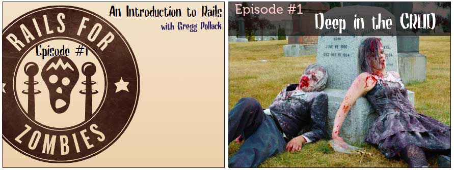
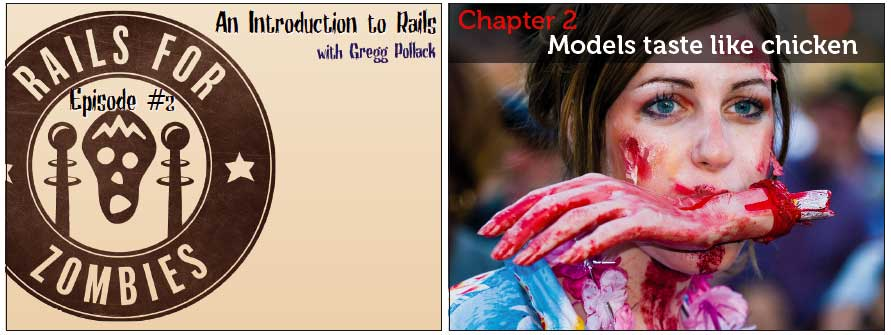
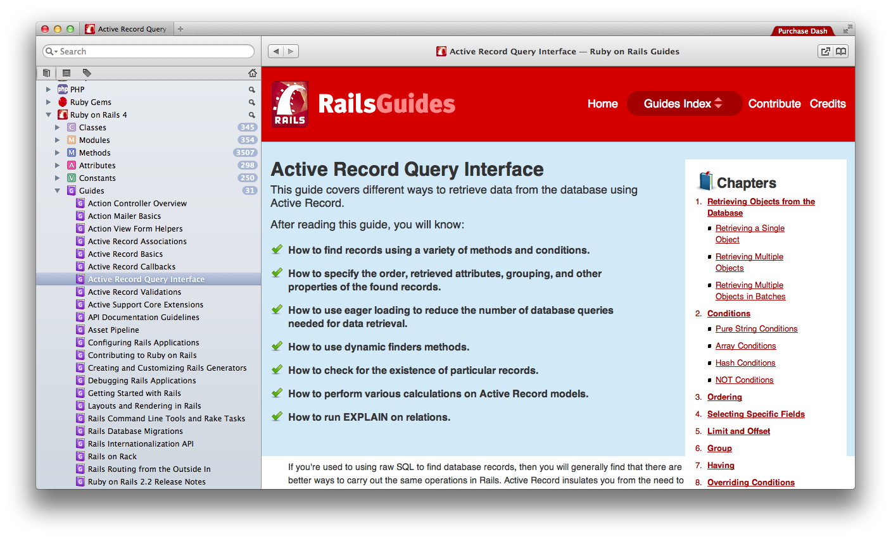

1 Models and Databases
In a modern programming language like rails we represent things in the real world with objects. For example if you are building a web application for project management, you will have objects of classes Project, and WorkPackage, and User.
To save these objects permanently we use a relational Database, in most cases Postgres or MySQL/MariaDB.
Here we hit on an old problem in computer science: storing objects into a relational database does not work all that well. This problem is called the Object-relational impedance mismatch and has been discussed scince the early 1980ies.
Today there exist several Design Patterns and Libraries for solving this. The solution is called an Object Relational Mapper or ORM.
Two Patterns used in Rails are ActiveRecord and ObjectMapper, both first described by Fowler in his 2003 book Patterns of Enterprise Application Architecture. ActiveRecord is the default solution used in Rails.
2 ActiveRecord
Rails implements the Active Record pattern in a class called ActiveRecord. All the models in a rails project inherit from ActiveRecor
class Thing < ActiveRecord::Base end
2.1 The Mapping
A quick overview of how Objects and Database relate when using the ActiveRecord Pattern:
Database Ruby on Rails --------------------------- -------------------------- Table `courses` Class Course app/models/course.rb One row in the Table one object of the class Course SELECT * FROM courses WHERE id=7 Course.find(7)`
2.2 How to build
To build your first model and it's corresponding
database table you can use the scaffold generator.
You need to work on the command line using the commands
rails and rake.
rails generate scaffold tweet status:string zombie:string- look at the migration that was generated in
db/migrate/*create_tweets.rb - run the migration:
rake db:migrate - look at the model generated in
app/models/tweet.rb - add validations, associations to model
2.3 Work with the Model Interactively
You can use the rails console to work with
the model. This is similar to the ruby console irb
but with your rails app already loaded.
Any changes you make are really written
to the development database!
rails console
2.4 Now do 'Rails for Zombies' Episode #1

2.5 Validations
- validations are declared on the model
- checked every time data is saved to the database
- if data does not conform, error are available through the object
2.6 Validations
> t = Tweet.new
=> #<Tweet id: nil, status: nil, zombie: nil>
> t.save
=> false
> t.errors
=> {:status=>["can't be blank"]}
> t.errors[:status]
=> "can't be blank"
2.7 1:n Associations
2.8 1:n Associations
- 1:n associations are declared in the model with
belongs_toandhas_many: - Zombie has many tweets, Tweet belongs_to zombie.
- add the foreign key to the appropriate database table using a migration!
add_column :tweets, :zombie_id, :integer- both directions are now available in the objects:
t = Tweet.find(7); z = t.zombiez = Zombie.find(1); z.tweets.each{ |t| puts t.status }
3 Rails for Zombies
Now do 'Rails for Zombies' Episode #2

3.1 On Documentation
You should have the ruby and rails documentation available on your computer at all times. A handy tool for this on mac os x is Dash. This is what a Rails Guide looks like in Dash:

3.2 Further reading
- The Rails Guides give a good introduction to a subject area:
- Rails Guide: Active Record Query Interface
- Rails Guide: Active Record Validations and Callbacks
- Rails Guide: Active Record Associations
- Use the API Dock to look up the details:
- Rails @ API Dock: find()
- Rails @ API Dock: ActiveRecord Validations
- Rails @ API Dock: ActiveRecord Associations